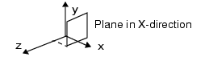
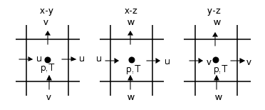

Exporting Cell by Cell Results Data
You can export solution results for any calculated field variable for the solution domain or any assembly or object as a csv file. The results at the center of every grid cell are reported.
Similarly, solution results data over a plane for any calculated field variable can be exported using Export Plane Plot Scalar Field button in the “Plane Plot Property Sheet”.
Procedure
Results
A .csv file is saved with all the grid cells from the selected grid, for the selected variable, within the bounding box of the selected object. If there are any localized grid settings within the solution domain, then averaged values will be displayed for the Base Grid selection. These averaged values are those mapped onto the Base Grid from the localized grid solution and are enclosed in square brackets.
For Transient solutions, results for the timestep selected in the Transient Time Step dropdown menu are exported.
Results data exported for 2D objects or Over a Plane Plot
Plane plot or 2D objects data is aligned in one of three ways:
A plane or a 2D object aligned in X direction, where Y is horizontal and Z is vertical.
A plane or a 2D object aligned in Y direction, where X is horizontal and Z is vertical.
A plane or a 2D object aligned in Z direction, where X is horizontal and Y is vertical.
Figure 1. Example of a Plane or 2D Object Aligned in the X DirectionTwo grid directions are used in the exported the results.
Figure 2 shows the temperature in each grid cell in the Z-plane located at Z=0.0197.
The cell highlighted is labeled by the grid indices IY=5 and IX=4.
The coordinates of the cell center are X=0.053, Y=0.116, and Z=0.0197.
The temperature in this cell is 102°C.
Figure 2. Example csv Results File for a Plane Plot in the X Direction Note:
Note:A similar csv file is exported for 2D objects.
Results data exported for a volume object
When exporting results data for a volume object, all three grid directions are included in the csv file. In Figure 3, the cell highlighted: table cell IX=3, IY=5, IZ=2 (location X=0.033, Y=0.116, Z=0.012) has a temperature of 24.1°C.
Figure 3. Example csv Results File for a Volume Object - Cell Results for Temperature
Velocity Components and Stagger Option
When Tables Velocity View Stagger is active (the default), the velocities displayed are the discretized values of the components u, v and w of the velocity vector field located at the faces of the grid cells. This arrangement is depicted schematically in the X-Y, X-Z and Y-Z planes for a single cell as shown in Figure 4.
Figure 4. View StaggerWhen deactivated, the velocity is interpolated to the cell center, as for the other variables.